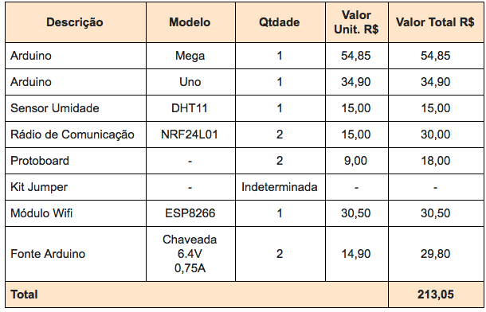

Protótipo não funcional módulo de transmissão
A figura abaixo demonstra o protótipo não funcional da estação remota onde estarão situados os seguintes componentes: Sensor de temperatura e umidade DHT11, módulo rádio/wifi NRF24L01 com antena externa e o microcontrolador Arduino Uno.
Os pinos de conexão referentes ao sensor ficaram na seguinte configuração:
Os pinos do módulo NRF24L01 foram configurados da seguinte maneira: